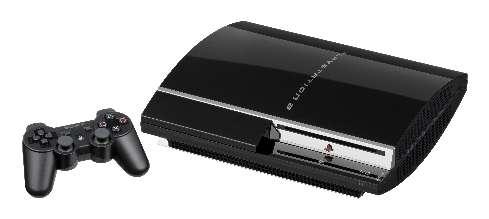

PlayStation 3
 PlayStation 3 adopts a high-capacity BD medium, and comes equipped with a pre-installed HDD. A unique network service becomes available in addition to online games and digital content downloads. PlayStation 3 realizes entirely new visual experiences through combination of Cell Broadband Engine with super computer like performance, and high-spec RSX graphic processors. The new controller for PlayStation 3 employs a high-precision, highly sensitive six-axis sensing system.
Description
The PlayStation 3 (officially abbreviated as PS3) is a home video game console developed by Sony Computer Entertainment. It is the successor to PlayStation 2, and is part of the PlayStation brand of consoles. It was first released on November 11, 2006 in Japan, November 17, 2006 in North America, and March 23, 2007 in Europe and Australia. The PlayStation 3 competed primarily against Microsoft's Xbox 360 and Nintendo's Wii as part of the seventh generation of video game consoles.
The console was first officially announced at E3 2005, and was released at the end of 2006. It was the first console to use Blu-ray Disc as its primary storage medium. The console was the first PlayStation to integrate social gaming services, including the PlayStation Network.
In September 2009, the Slim model of the PlayStation 3 was released. It no longer provided the hardware ability to run PS2 games. It was lighter and thinner than the original version, and featured a redesigned logo and marketing design, as well as a minor start-up change in software. While retaining the basic functionality, the internal design architecture of the new PlayStation 3 system has been completely redesigned, achieving a much slimmer and lighter body. Compared to the very first PlayStation 3 model, the internal volume as well as its thickness and weight are substantially trimmed down. While inheriting the sleek curved body design of the original model, the form factor of the new system features a new meticulous design with textured surface finish, giving an all new impression and casual look.
A Super Slim variation was then released in late 2012, further refining and redesigning the console. While retaining the basic functionality, the volume and weight of the new PlayStation 3 system has been reduced by more than half compared to the very first model with a 60GB HDD, and by 25% and 20% respectively compared to the previous PlayStation 3. Adopting a sliding disk cover, the new PlayStation 3 continues with the characteristic sleek curved body design, which fits perfectly in various places at home.
Hardware
PlayStation 3 uses the Cell microprocessor, designed by Sony, Toshiba and IBM, as its CPU, which is made up of one 3.2 GHz PowerPC-based "Power Processing Element" (PPE) and eight Synergistic Processing Elements (SPEs). To increase yields and reduce costs, the chip has 8 SPEs. After manufacture, every chip is tested and a defective SPE disconnected using laser trimming, leaving 7 SPEs. This means that otherwise discarded processors can be used, reducing costs and waste. Only six of the seven SPEs are accessible to developers as the seventh SPE is reserved by the console's operating system. Graphics processing is handled by the Nvidia RSX 'Reality Synthesizer', which can produce resolutions from 480i/576i SD up to 1080p HD. PlayStation 3 has 256 MB of XDR DRAM main memory and 256 MB of GDDR3 video memory for the RSX.
The system has Bluetooth 2.0 (with support for up to seven Bluetooth devices), Gigabit Ethernet, USB 2.0 and HDMI 1.4 built in. Wi-Fi networking is also built-in on all but the 20 GB models, while a flash card reader (compatible with Memory Stick, SD/MMC and CompactFlash/Microdrive media) is built-in on 60 GB and CECHExx 80 GB models.
PlayStation 3 features a slot-loading 2x speed Blu-ray Disc drive for games, Blu-ray movies, DVDs, and CDs. It was originally available with hard drives of 20 and 60 GB (20 GB model was not available in PAL regions) but various sizes up to 500 GB have been made available since then. All PS3 models have user-upgradeable 2.5" SATA hard drives.